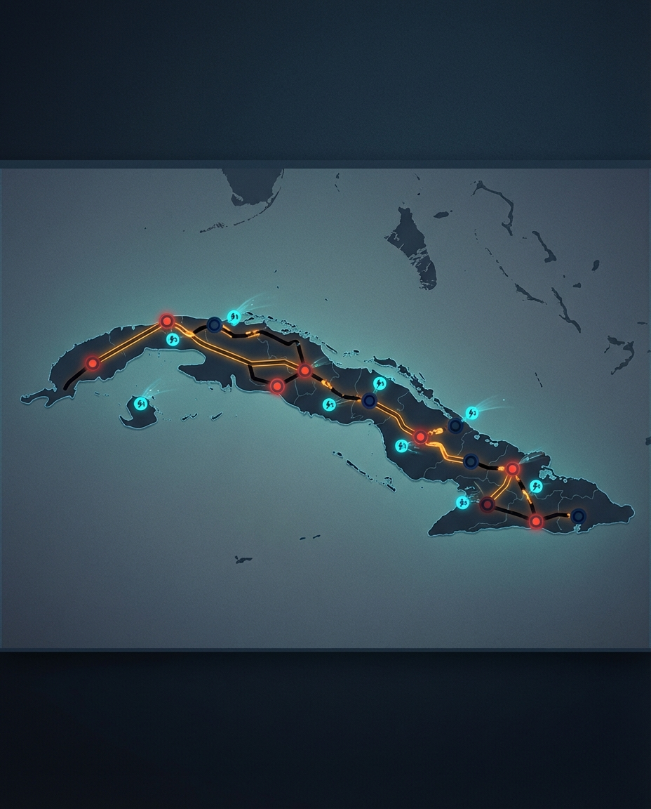

Cuba has suffered a complete collapse of its national electrical grid, plunging the island into another sweeping blackout and leaving roughly 10 million people without power. Authorities confirmed a total disconnection of the national power system on Monday, but did not immediately provide a definitive technical cause.
What happened
Reports from Cuban state authorities and international outlets indicate that the island’s electrical system suffered a full shutdown in the early afternoon local time. That matters because a full national collapse is not the same as Cuba’s already frequent rolling outages. This is a harder reset: the grid effectively falls to zero and must be rebuilt in stages, which can take hours or even days depending on stability and fuel availability.
Why it matters
This blackout lands in the middle of a much wider energy emergency. Cuba’s power system has been under pressure from aging thermoelectric plants, chronic maintenance shortfalls, and severe fuel scarcity. Officials have recently said the country went more than three months without major oil shipments, forcing the system to lean on a fragile mix of thermal plants, natural gas, and limited solar generation. When a grid is already stretched that thin, a single fault can trigger a cascading collapse.
What comes next
Restoration is expected to be complex. Cuba’s grid operates as a network of generation islands, which makes restarting the system from scratch more difficult than simply flipping power back on. In practical terms, that means hospitals, refrigeration, water pumping, transport, and everyday economic activity all remain vulnerable while restoration crews try to stabilise the system. The bigger story is no longer just one blackout — it is that total grid failure is becoming part of the rhythm of the Cuban crisis.

Sources: El País, The Guardian, PBS/AP reporting, 16–17 March 2026
El País report ·
The Guardian report ·
PBS/AP report
— Howard